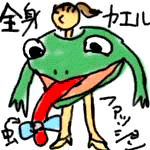
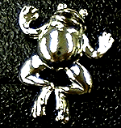

|
カエル演歌で打倒Ｊポップス！ 聞け減反政策反対！『蛙の嘆き節』
【日本発=GEN & SHION同志記者】先日、素晴らしいＣＤを発見したので御報告します。
歌っている浅野麻里子という人のどうも個人で開設しているらしいHPを同時に御紹介しておきます。１９９８年から更新していないので、この曲にはまったく触れていませんが。 【全国かえる奉賛会】カエル演歌歌手の浅野麻里子さんを激励するため、全国のカエラーは、ＣＤを購入しよう。そして、激励のメールを出そうではないかああああああ。 農林水産省の関係者がこの歌を聞いたら、ただちに減反政策を放棄して、周辺諸国への米の無償供与をやめて高額で売りつけよう！！カエルのために、われわれカエラーは、パン食をやめて、ご飯か団子を食べようではないかあ。 パリ・コレに全身カエルファッション？！ 【横浜発=kei-f同志記者】何気なくテレビを見ていると2001年パリの秋冬コレクションの模様が写っていました。それは現在クリスチャン・ディオールのデザイナーのジョン・ガリアーノのコレクションの模様でした。奇抜な洋服に身を包んだ女性達がステージを闊歩していたのですが、そのなかになんと!!!カエルとしか思われないような服(!?)をまとった女性が現れたではありませんかっっっ!!! 目を疑ってしまいました…簡潔ではありますが、図を添付いたします。まじめにこうだったんですよ…舌先には虫のようなものがくっついていました。奇才といわれるジョン・ガリアーノもカエルに魅せられたのでしょうか???日本テレビの海外トピックスとして放送されました。
カエルファッション画像を待つ！【全国かえる奉賛会】今や、有名デザイナーもカエルをデザインしなければ、生きてゆけない時代になりつつあるぞ。そのうちに、パリ・コレも、出展するデザイナーの全員がカエルをテーマにした奇抜なファッションを競い合うようになるはずだ。パリ在住または、ファッション業界に強いカエラーがいたら、今回の画像を大王様へのメールwakuro-3@hf.rim.or.jpに送ってクレーまっているぞおお。
カエルサボテン３月中旬発売？？【福岡発=謎のカエルサボテン美少女様】みなさん、お待たせしました？待っている人がいするのかな？？カエルサボテン（木彫一刀彫り）が３体完成ました。３月からけろテン市場で発売します。カエルサボテンは、３つとも手彫りなので、少しづつ表情が違います。
カエルサボテン。サボテンミニ。サボテン用土。サボテン植木鉢。４点セットで２０００円を予定しています。本業が忙しくて、撮影時間がどんどんずれ込んでしまっていますが、必ず今月には発売します。みんな気長に、ときおり、このカエル新聞をリロードしてくださいー。ここで発売をお知らせします。
 胸に輝くカエルの徽章！【福岡発=しげやん同志記者】背広の胸につけるカエルデザインのものを発見しました。もちろん、即座に購入しましたああああ。以前は、カエル好きの人たちのために購入してプレゼントしていたのですが、このごろは、自分のために買って、みんなに自慢するようになってしまい、今や完全にカエラーだあああ。値段は１８００円でした。
【全国かえる奉賛会】そうだあ。以前は『大王様、こんなカエルがいましたよ。はいあげる』といううれしい展開だたのだが、しげやんがカエラーになってからというもの。『大王様、こんなものがありました。あ。みるだけね。僕のだから』という、状況になってしまい、みせびらかしにきているのかあ。
ダイハツのらな、あかんあかんカエル！【福岡発=げこげこ大王直筆】みんなは、もうダイハツの宣伝をみたかー。テレビで、クマの子どもがダダをこねているやつがあるが、それの続編バージョンは、交尾している２匹のトンボを、水中から、トノサマカエルがジャンピングぱっっくんを決め損ない、不様な伸びきった姿勢で、水田に落ちて行く、というシュールな実写だ。画像持っている人がいたら、送ってクレー。大王は、あのＣＭすきやねん！カエル本の画像付き情報を募集！ 【福岡発=ぴのこ同志記者】カエルな本は、世の中全体から見れば、需要が少ないので、出版されても知らないウチに絶版になっていたりします。インターネット上に、カエル書籍を集中的に扱うバーチャル書店を作ってしまうことにしました。みんなが知っているカエルをテーマにした本を教えて下さい。ある書店と契約して希望のカエル本を、に配達してくれるよう準備中です。
【福岡発=ぴのこ同志記者】カエルな本は、世の中全体から見れば、需要が少ないので、出版されても知らないウチに絶版になっていたりします。インターネット上に、カエル書籍を集中的に扱うバーチャル書店を作ってしまうことにしました。みんなが知っているカエルをテーマにした本を教えて下さい。ある書店と契約して希望のカエル本を、に配達してくれるよう準備中です。
カエルのカオル写真展Vol.2！【東京発=カエルのカオル同志記者】銀座のギャラリーで写真展（フォト＆ストーリー展）をやっています。トルコ、ギリシアの旅の写真が中心です。さいきん、ぼくは月刊『MOE』という雑誌の３月号の特集「カエル事典」でレポーターとしても登場しました。（カエル事典には、かえ〜るボックスも登場しているよ！）それでぼくはというと、特集の中でかえるまんじゅうで有名な青柳総本家と、河鍋暁斎記念美術館を取材して記事を書いたんだよ。よかったら、ギャラリーにも遊びにきてくださいね。訪問９９９９９人目に記念品贈呈！【全国かえる奉賛会】９９９９９人目の訪問者に、記念品を贈呈するぞー。該当者は、大王様へのメールwakuro-3@hf.rim.or.jpで自己申告してくれー。福岡かえる展２のＭＬを開設！【福岡かえる展２事務局】福岡かえる展２の実行委員会用のメーリングリストを開設しました。公式ホームページの他に、実行委員会メンバーが情報交換する場所です。もちろん最新の情報は、昨年同様に、できるかぎりすべて、公式ホームページで公開します。メーリングリストで、その準備段階から体験したいというカエラーは、参加していただいてかまいません！参加申し込みは、ここからも自分でできるからねーっ！ 投稿採用者に武功カエル徽章を授与！ |
かえる古新聞過去に取り上げた記事を見出し付きで一覧したい人は、ここをクリック◆創刊号を見る◆先週号を見る◆話題の号を見る◆かえる新聞の昔を読む
|
私も入っています。。全国かえる奉賛会
大王様に会うには、このバナーをクリック。ずっと奥に写真館があるぞ。全国かえる奉賛会に入会するには、自分のホームページのどこかに、下の部分を追加するとバナーがリンク付きで表示されるぞ。どんどん入会しましょー |


|